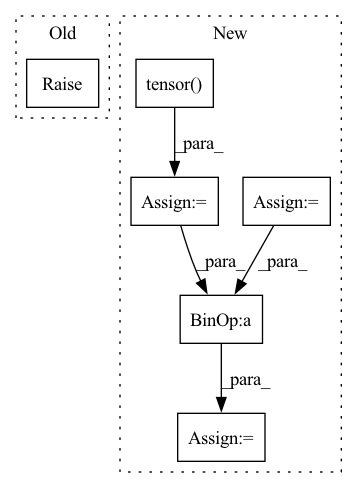

Pattern ID :32814

Before Change
def unsorted_segment_mean(x, segment_ids, num_segments):
raise NotImplementedError
def unsorted_segment_min(x, segment_ids, num_segments):
After Change
assert x.shape[0] == segment_ids.shape[0], "the length of segment_ids should be equal to data.shape[0]."
if len(segment_ids.shape) == 1:
s = torch.prod(torch.tensor(x.shape[1:]))
segment_ids = segment_ids.repeat_interleave(s).view(segment_ids.shape[0], *x.shape[1:])
assert x.shape == segment_ids.shape, "data.shape and segment_ids.shape should be equal"
shape = [num_segments] + list(x.shape[1:])
ones_data = torch.ones_like(x, dtype=x.dtype)
tensor = torch.zeros(*shape, x.dtype).scatter_add(0, segment_ids, x)
tensor_nums = torch.zeros(*shape, x.dtype).scatter_add(0, segment_ids, ones_data)
tensor = tensor / tensor_nums
return tensor
In pattern: SUPERPATTERN
Frequency: 3
Non-data size: 6
Instances
Fragment ID: 95175740
Project Name: tensorlayer/tensorlayerx
Commit Name: c65412794b3c56405fd6268ed7314a6e6881912f
Time: 2022-03-10
Author: jiaronghan@outlook.com
File Name: tensorlayerx/backend/ops/torch_backend.py
M Class Name: AnonimousClass
N Class Name: AnonimousClass
M Method Name: unsorted_segment_mean(3)
N Method Name: unsorted_segment_mean(3)
M Parent Class:
N Parent Class:
M File Name: tensorlayerx/backend/ops/torch_backend.py
N File Name: tensorlayerx/backend/ops/torch_backend.py
M Start Line: 1484
M End Line: 1484
N Start Line: 1541
N End Line: 1555
'>
Before Change
else actor_critic_output.distributions.mode()
)
if self.teacher_forcing is not None and self.teacher_forcing() > 0:
raise NotImplementedError()
// teacher_forcing_mask = torch.bernoulli(actions.shape, p=self.teacher_forcing())
// teacher_forcing_mask *= step_observation["expert_actions"]
// actions = teacher_forcing_mask * step_observation["expert_actions"] + (1-teacher_forcing_mask)
After Change
and self.teacher_forcing(self.rollout_count) > 0
):
tf_mask_shape = step_observation["expert_action"].shape[:-1] + (1,)
expert_actions = (
step_observation["expert_action"].view(-1, 2)[:, 0].view(*tf_mask_shape)
)
expert_action_exists_mask = (
step_observation["expert_action"].view(-1, 2)[:, 1].view(*tf_mask_shape)
)
teacher_forcing_mask = (
torch.distributions.bernoulli.Bernoulli(
torch.tensor(self.teacher_forcing(self.rollout_count))
)
.sample(tf_mask_shape)
.long()
.to(self.device)
) * expert_action_exists_mask
actions = (
teacher_forcing_mask * expert_actions
+ (1 - teacher_forcing_mask) * actions
)
'>
Fragment ID: 95175710
Project Name: allenai/allenact
Commit Name: 8e313465b05e6546339b02ea73bc1ded059bab14
Time: 2020-01-20
Author: lucaw@allenai.org
File Name: onpolicy_sync/trainer.py
M Class Name: Trainer
N Class Name: Trainer
M Method Name: collect_rollout_step(2)
N Method Name: collect_rollout_step(2)
M Parent Class:
N Parent Class:
M File Name: onpolicy_sync/trainer.py
N File Name: onpolicy_sync/trainer.py
M Start Line: 168
M End Line: 194
N Start Line: 184
N End Line: 213
'>
Before Change
upsampled_image = F.interpolate(downsampled_image, size=(height, width), mode="nearest")
result = upsampled_image * mask + x * (1. - mask)
else:
raise NotImplementedError("Not implemented mask type.")
return result, mask
After Change
height, width, _ = config["image_shape"]
max_mask = x.shape[0]
result = torch.ones_like(x)
mask = torch.ones(size=[x.shape[0], 1, x.shape[2], x.shape[3]])
for i in range(max_mask):
mask_temp = random_mask(height=height, width=width)
mask_temp = torch.tensor(mask_temp, dtype=torch.float32)
if x.is_cuda:
mask_temp.cuda()
result[i, :, :, :] = x[i, :, :, :] * (1. - mask_temp)
mask[i, :, :, :] = mask[i, :, :, :] * mask_temp
return result, mask
'>
Fragment ID: 95175774
Project Name: sayednadim/global-and-local-attention-based-free-form-image-inpainting
Commit Name: 76ff7604018fa398ac445982097becbe3fc20e3a
Time: 2020-08-16
Author: smnadimuddin@gmail.com
File Name: model/mask.py
M Class Name: AnonimousClass
N Class Name: AnonimousClass
M Method Name: mask_image(2)
N Method Name: mask_image(2)
M Parent Class:
N Parent Class:
M File Name: model/mask.py
N File Name: model/mask.py
M Start Line: 56
M End Line: 72
N Start Line: 49
N End Line: 59